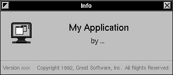

Copyright ª1996 by NeXT Software, Inc. All Rights Reserved.
Next Section Previous Section
Creating a nib file
Choose one of the commands in the New Modules submenu of the Document menu.
Or
Choose New Empty from the New Modules submenu, then drag a window or panel from the Windows palette.
Or
Choose New Application from the Document menu.
Sometimes you need to create nib files directly in Interface Builder, typically when you want to add additional windows and panels to your application.
Most commands of the New Module submenu create nib files that contain a special kind of ready-made panel; your application can later load these nib files when it needs them. For example, if you choose New InfoPanel, you'll get the following template panel:

The New Empty command just creates an empty nib file; you must create the windows and panels for it by dragging these objects from the Windows palette. The Document New Application command can create your application's main nib file (a nib file with the owner of NSApplication) if that hasn't already been done for you in Project Builder.
You can have auxiliary nib files, such as an Info panel, that you load into your program only when you need to. The programming technique of loading nib files on demand (lazy instantiation) is described in Chapter 11, “Dynamic Loading.”
One reason to use New Application is to create a version of your interface for Microsoft Windows.
Related Concept: Saving the Nib File
Related Concept: What's in a Nib File